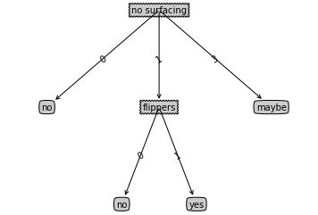

本文的大部分代码基于 Machine Learning in Action 一书，原书代码解释较少，自己增加了很多注释，可以在这里下载。
ID3算法实现
构造数据
def createDataSet():
""" the dataset for test """
dataSet = [[1, 1, 'yes'],
[1, 1, 'yes'],
[1, 0, 'no'],
[0, 1, 'no'],
[0, 1, 'no']]
# name of each feature
labels = ['no surfacing', 'flippers']
return dataSet, labels
这是一个简单的数据集，只有两个feature，对应两种输出。
信息增益
计算数据集的香农熵
我们首先计算数据集的香农熵（信息熵），根据计算公式：
注意，我们这里的数据以list为数据结构，最后一列为分类结果，前面的都为属性。
def calcShannonEnt(dataSet):
''' the function is used to calculate Shannon Entropy,
a method to measure the disorder of data .
the dataSet is like [[1,1,'yes'],[1,0,'no'],...]
the last index of each vector stands for which class it belong.
the feature needs to be discrete and numeric.
return shannon Entropy
'''
numEntries = len(dataSet)
# use lambda to define a function zero when key is not presented
labelCounts = defaultdict(lambda: 0)
for feaVec in dataSet:
currentLabel = feaVec[-1]
labelCounts[currentLabel] += 1
shannonEnt = 0.0
for key in labelCounts:
prob = float(labelCounts[key]) / numEntries
shannonEnt -= prob * log(prob, 2) # -\sum [p*log(p)]
return shannonEnt
按照特征划分数据集
根据算法，我们需要计算每个特征的信息增益，因此首先需要对数据集进行划分：
def splitDataSet(dataSet, axis, value):
"""split Dataset to get information gain for this axis
axis means the fature to calculate using value
return the data splited
"""
retDataSet = []
for featVec in dataSet:
if featVec[axis] == value:
reducefeatVec = featVec[:] # copy
reducefeatVec.pop(axis) # delete axis feature
retDataSet.append(reducefeatVec)
return retDataSet
选择最好的划分方式
最后，我们针对不同的划分方式计算香农熵，选出最好的划分方式
def chooseBestFeatureToSplit(dataSet):
""" choose best feature according to information gain
the data must have the same dimension
return the feature chosen
"""
numFeatures = len(dataSet[0]) - 1
baseEntropy = calcShannonEnt(dataSet)
bestInforGain = 0.0
bestFeature = -1
for i in range(numFeatures):
featList = [example[i] for example in dataSet]
uniqueVals = set(featList)
newEntropy = 0.0
for value in uniqueVals:
subDataSet = splitDataSet(dataSet, i, value)
prob = len(subDataSet)/float(len(dataSet))
newEntropy += prob*calcShannonEnt(subDataSet)
infoGain = baseEntropy - newEntropy
if (infoGain > bestInforGain):
bestInforGain = infoGain
bestFeature = i
return bestFeature
递归构建决策树
停止递归条件
- 当所有类别标签全部相同，则直接返回该标签
- 当使用完了所有特征，依然不能将数据集进行分类，这里使用投票的方法选出数量最多的标签作为该类。
import operator
def majorityCnt(classList):
""" this function is used when the algorithm cannot continue
to classfy because all attributes are used
majority of class will be chose.
return the class chosen
"""
classCount = defaultdict(lambda: 0)
for vote in classList:
classCount[vote] += 1
sortedClassCount = sorted(classCount.iteritems(),
key=operator.itemgetter(1), reverse=True)
return sortedClassCount[0][0]
构造决策树
注意，我们使用了一个特征之后，该特征就会被删除不再使用。
def createTree(dataSet, labels):
""" recursively calculate the tree
delete the label used
return tree dictionary
"""
classList = [example[-1] for example in dataSet]
if classList.count(classList[0]) == len(classList):
# if all data is the same class, return
return classList[0]
if len(dataSet[0]) == 1:
# if cannot continue, return
return majorityCnt(classList)
bestFeat = chooseBestFeatureToSplit(dataSet)
bestFeatLabel = labels[bestFeat]
# init label
myTree = {bestFeatLabel: {}}
# have used the feature
del(labels[bestFeat])
# split the data according to feature value
featValues = [example[bestFeat] for example in dataSet]
uniqueVals = set(featValues)
for value in uniqueVals:
subLabels = labels[:] # copy
myTree[bestFeatLabel][value] = createTree(splitDataSet
(dataSet, bestFeat, value), subLabels)
return myTree
结果
在这里我们的决策树就已经构造完毕，最后的输出是一个嵌套的字典，可以使用如下代码输出查看：
myDat, labels = createDataSet()
myTree = createTree(myDat,labels)
print(myTree)
可视化
决策树是一个很直观的算法，那么我们如何进行可视化呢？这里需要用到Matplotlib中的很多技巧，详细的解释可以参考这里。
除了绘图技巧，这里也使用了Python中利用函数实现全局变量的技巧。
绘制树节点
# draw myTree
import matplotlib.pyplot as plt
decisionNode = dict(boxstyle="sawtooth", fc="0.8")
leafNode = dict(boxstyle="round4", fc="0.8")
arrow_args = dict(arrowstyle="<-")
def plotNode(nodeTxt, centerPt, parentPt, nodeType):
""" bbox: the outline of text\n
axes fraction: fraction of axes from lower left\n
xy: the node of annotate\n
xytext: the text xy coordinate\n
va: verticalalignment\n
ha: horizontalalignment
"""
createPlot.ax1.annotate(nodeTxt, xy=parentPt, xycoords='axes fraction',
xytext=centerPt, textcoords='axes fraction',
va="center", ha="center", bbox=nodeType, arrowprops=arrow_args)
def createPlotTest():
""" facecolor means the arrow color\n
subplot(numrows, numcols, fignum)\n
createPlot.ax1: the attribute of function\n
clf():Clear figure
"""
fig = plt.figure(1, facecolor='white')
fig.clf()
createPlot.ax1 = plt.subplot(111, frameon=False)
plotNode('descion node', (0.5, 0.1), (0.1, 0.5), decisionNode)
plotNode('leaf node', (0.8, 0.1), (0.3, 0.8), leafNode)
plt.show()
递归计算树高和节点数
绘图之前，首先要计算树高和节点，这样有利于精确绘制。
def getNumleafs(myTree):
""" get the numbers of leafs recursively
"""
numLeafs = 0
firstStr = list(myTree.keys())[0]
secondDict = myTree[firstStr]
for key in secondDict.keys():
if type(secondDict[key]).__name__ == 'dict':
numLeafs += getNumleafs(secondDict[key])
else:
numLeafs += 1
return numLeafs
def getTreeDepth(myTree):
""" get the depth of tree
"""
maxDepth = 0
firstStr = list(myTree.keys())[0]
secondDict = myTree[firstStr]
for key in secondDict.keys():
if type(secondDict[key]).__name__ == 'dict':
thisDepth = 1 + getTreeDepth(secondDict[key])
else:
thisDepth = 1
if thisDepth > maxDepth: maxDepth = thisDepth
return maxDepth
绘制决策树
def retrieveTree(i):
""" simple test of data
"""
listOfTrees = [{'no surfacing': {0: 'no', 1: {'flippers': {0: 'no', 1: 'yes'}}, 3: 'maybe'}},
{'no surfacing': {0: 'no', 1: {'flippers': {
0: {'head': {0: 'no', 1: 'yes'}}, 1: 'no'}}}},
]
return listOfTrees[i]
def plotMidText(cntrPt, parentPt, txtString):
"""plot the text in the middle of two nodes
"""
xMid = (parentPt[0] - cntrPt[0])/2.0 + cntrPt[0]
yMid = (parentPt[1] - cntrPt[1])/2.0 + cntrPt[1]
createPlot.ax1.text(xMid, yMid, txtString, va="center", ha="center", rotation=30)
def plotTree(myTree, parentPt, nodeTxt):
""" recursively plot the tree
"""
numLeafs = getNumleafs(myTree)
depth = getTreeDepth(myTree)
firstStr = list(myTree.keys())[0]
cntrPt = (plotTree.xOff + (1.0 + float(numLeafs)) /
2.0/plotTree.totalW, plotTree.yOff)
plotMidText(cntrPt, parentPt, nodeTxt) # plot the text
plotNode(firstStr, cntrPt, parentPt, decisionNode)
secondDict = myTree[firstStr]
plotTree.yOff = plotTree.yOff - 1.0/plotTree.totalD # reduce offset of y
for key in list(secondDict.keys()):
# test to see if the nodes are dictonaires, if not they are leaf nodes
if type(secondDict[key]).__name__ == 'dict':
plotTree(secondDict[key], cntrPt, str(key)) # recursion
else:
plotTree.xOff = plotTree.xOff + 1.0/plotTree.totalW
plotNode(secondDict[key], (plotTree.xOff,
plotTree.yOff), cntrPt, leafNode)
plotMidText((plotTree.xOff, plotTree.yOff), cntrPt, str(key))
plotTree.yOff = plotTree.yOff + 1.0/plotTree.totalD
def createPlot(inTree):
""" main entry of plot\n
calcalate the size of graph and style
"""
fig = plt.figure(1, facecolor='white')
fig.clf()
axprops = dict(xticks=[], yticks=[])
createPlot.ax1 = plt.subplot(111, frameon=False, **axprops)
plotTree.totalW = float(getNumleafs(inTree)) # store the width of tree
plotTree.totalD = float(getTreeDepth(inTree)) # store the depth of tree
plotTree.xOff = -0.5/plotTree.totalW
plotTree.yOff = 1.0
plotTree(inTree, (0.5, 1.0), '')
plt.show()
结果如图所示：
